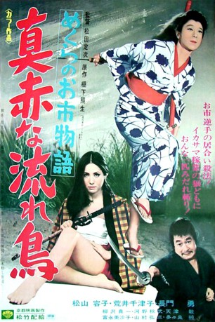

#4228 Die Blinde schwertschwingende Frau
 
 IMDB-Wertung: 7.1 / 10
IMDB-Wertung: 7.1 / 10  Metascore: 0
Metascore: 0 
Oichi (Yôko Matsuyama) verliert während eines Unwetters ihr Augenlicht und wird von ihrer Mutter allein zurückgelassen. Ein ehemaliger Bandit nimmt ich ihrer an und zieht sie groß. Eines Tages jedoch tötet ein ehemaliger Komplize, mit Beinamen genannt der Teufel, den ehemaligen Banditen. Da taucht auf dem nichts ein fast unbesiegbarer Samurai auf, der Oichi im Schwertkampf trainiert, da ihm aufgefallen war, dass das Mädchen Talent dafür hat. Oichi schwört Rache und auf ihrem Weg dorthin verteidigt sie die Wehrlosen und Schwachen, bis es zum alles entscheidenden Kampf mit dem Teufel kommt...
Jahr: 1969
Dauer: 88 Minuten
FSK: 12
Land: Japan Studio: VEB Progress Film-VertriebTonspuren:
Untertitel: Deutsch,
Auflösung: 1080p (1920x816) Größe: 7833 MB
Genre: Action, Abenteuer, Drama
Regisseur: Sadatsugu Matsuda
Drehbuch: Tobias Lindholm
Soundtrack:
Darsteller:
- Yôko Matsuyama als Oichi
- Chizuko Arai als Omon
- Jun Tatara als Nihei
- Shin'ichi Yanagisawa als
- Akitake Kôno als Yasuke
- Misako Tominaga als
Datei: X:\HD-Eastern-Classic(A-M)\Blinde schwertschwingende Frau, Die (1969, FSK12, 1920x816).mkv seit 26.08.2016
Festplatte: HD Eastern+Western
 Es gibt insgesamt 63 Filme in der Gruppe 'HD-Eastern-Classic(A-M)'
Es gibt insgesamt 63 Filme in der Gruppe 'HD-Eastern-Classic(A-M)'